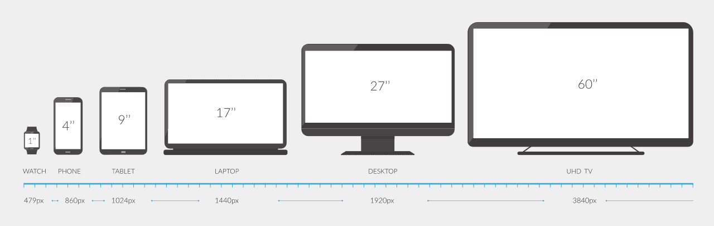
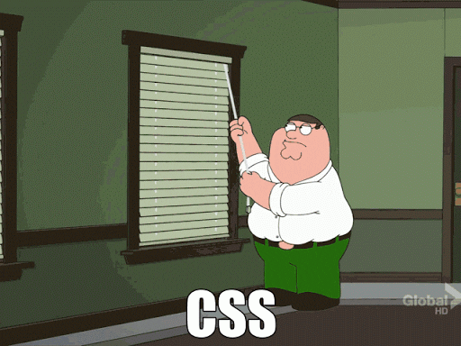
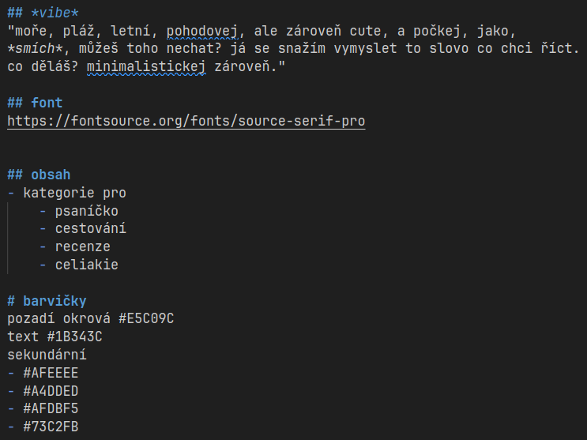
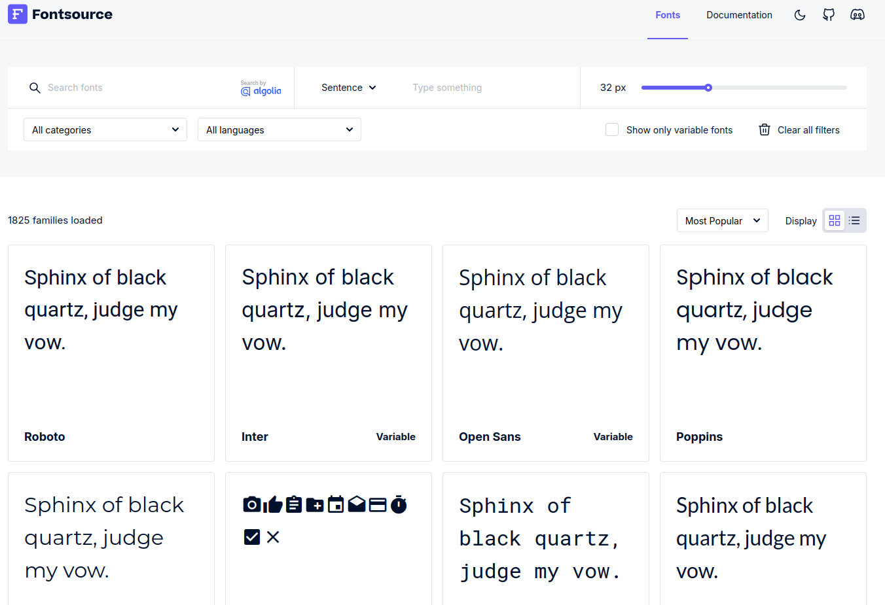
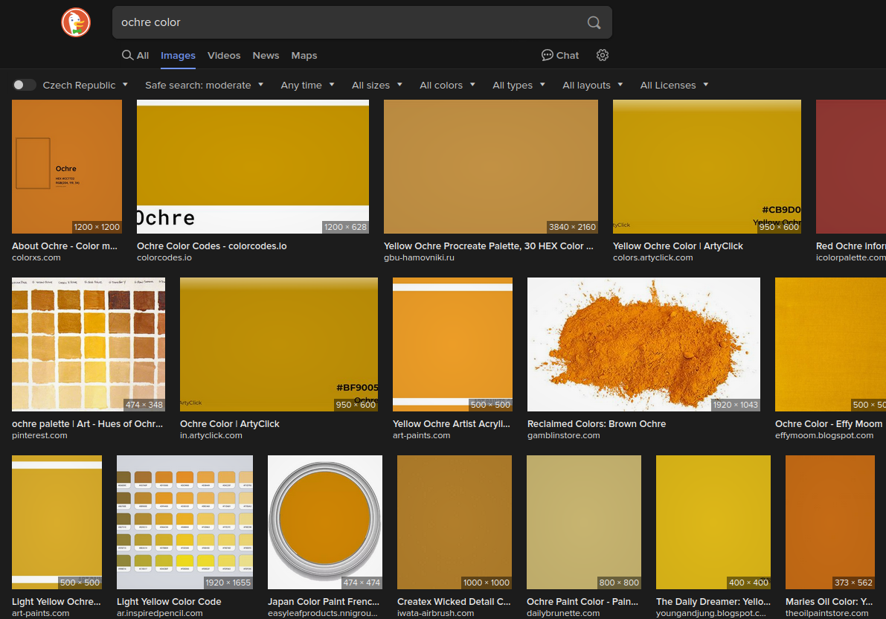
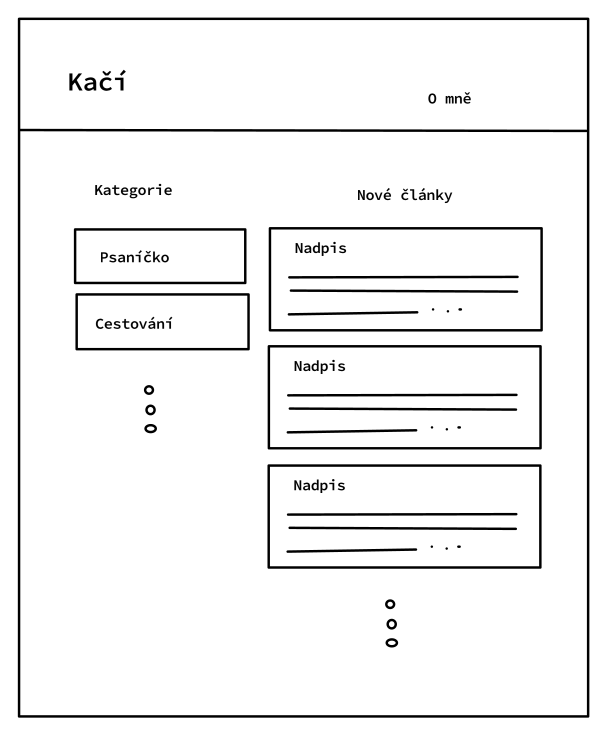
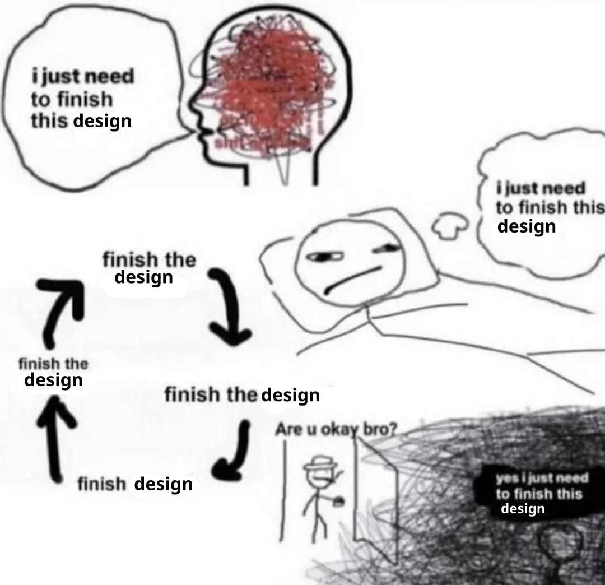

Tvorba webů 101
Kubík Hampl
meta
Všechny modré texty v prezentaci jsou odkazy, které se ti nejspíš budou hodit.Co si povíme
- návrh, očekávání a realita
- konfigurace a tvorba
- ach ty internety
- diskuze??
návrh, očekávání a realita
AAAAAAAAAAAAAAAA
- hromada standardů
- milion frameworků
- nespočet způsobů jak docílit podobného výsledku
- každý vám bude tvrdit něco jiného
důsledek: neexistuje správný postup
největší úskalí
interaktivita
největší úskalí
Tohle nechceme!
Náš web by:
- neměl obsahovat zbytečně rušivé prvky
- měl respektovat soukromí uživatelů
- měl mít na prvním místě obsah
Cílíme na čtenářský komfort!
Case study – Kačí blog
- o cestování
- o knížkách
- vlastní tvorba
co je špatně?
- barva textu nemá dobrý kontrast
- je to nudné...
je třeba chytit správný vibe
"moře, pláž, letní, pohodovej, ale zároveň cute, a počkej, jako, *smích*, můžeš toho nechat? já se snažím vymyslet to slovo co chci říct. co děláš? minimalistickej zároveň."
"náčrt"
výběr fontu
hledání správné okrové
wireframe
- nemusíte mít perfektní představu
- vymýšlejte za pochodu
- experimentujte!
- cool vzhled je fajn, ale jde o obsah!
dobrý design neuděláte za noc
ale zase se nenechte unést...
konfigurace a tvorba
Nejdříve pár technikálií...
HTML
CSS
JavaScript
HTML
CSS
JavaScript
nebude potřeba :)
statické weby
- jednou se vygenerují a zůstávají stejné
- stačí jednoduchý webserver*
- jednodušší na výrobu údržbu
* k tomu co je to webserver se dostaneme později
dynamické weby
- mění se v závislosti na uživateli (např. instagram, online e-shopy, atp.)
- často vyžadují komplexnější logiku serveru
- složitější na výrobu a údržbu
Jekyll
TailwindCSS
- Rozšíření CSS
- Třídy s rozumnými defaulty
- Flexibilní konfigurace
- Velmi dobrý systém interaktivity!
JEKYLL TAILWIND TEMPLATE
- Můj výtvor
- Používám to na většinu stránek co pro svoje potřeby vyrobím
- Obsahuje návod jak to nainstalovat a zprovoznit
Node.js a Ruby
- Ruby pohání Jekyll
- Node.js pohání TailwindCSS
Motivace
- Jekyll
(když zrovna funguje)umí jednoduše vrstvit designy stránek, stará se za nás o hromadu technických věcí - TailwindCSS mi pomohlo méně se zasekávat na "mikro-úpravách"
THIS PAGE INTENTIONALLY LEFT BLANK
ACH TY INTERNETY...
Je to složité místo...
a tahle část prezentace by zasloužila vlastní přednášku.

webserver
- Kouzelná krabička někde na internetu
- Servíruje náš web těm, kdo o něj zažádají
Na internetu je hodně kouzelných krabiček. Jak náš telefon ví, kterou kontaktovat?
Neví.
ip adresa
- Unikátní číslo každého počítače
- Je to složitější...
Na internetu je hodně unikátních čísel.
Jak náš telefon ví, které kontaktovat?
Neví.
doména
- Lidsky zapamatovatelný název
- Lze ji přiřadit k IP adrese
- Je potřeba si ji koupit
Jak náš telefon ví, ke které IP adrese patří doména, kterou hledá?
Neví.
DNS
- Globální systém překladu domén na IP adresy
- Hurá!
teď prakticky
Způsob 1
autismus
VPS
- Virtual Private Server
- Dostane přiřazenou IP adresu
- Já používám Hetzner
VÝHODY |
|
|---|---|
NEVÝHODY |
|
REVERSE PROXY
Program co vezme naše html soubory a předhodí je internetu.
Caddy
kaculik.cz {
root * /www/kaculik.cz
file_server
}
Doména
- Můžete ji koupit na hodně místech
- Je jedno kde ji koupíte
- Já používám Wedos
- Od března se zvyšují ceny .cz na 160,-
PLAUSIBLE
- Respektuje soukromí vašich návštěvníků
- Můžete si to platit, nebo self-hostovat
- Moje instance
Způsob 2
normální
Github pages
Vbudovaný hosting přímo na GitHubu.
VÝHODY |
|
|---|---|
NEVÝHODY |
|
Způsob 3
je mi to jedno
webzdarma.cz, neocities, apod.
Velmi jednoduché a přívětivé hostingové služby (často zadarmo)
VÝHODY |
|
|---|---|
NEVÝHODY |
|
discovery
Máte cool stránku, ale nikdo na ní nechodí :(
RRS reader
- Všichni na tuhle technologii zapomněli :(
- Nic vám neservíruje algoritmus, sami si vybíráte, co sledujete
- Velmi open!!
cool list
Seznam cool stránek cool lidí o cool věcech
- Můj cool list
- 0d9e.tech
- Marka cool list
- Matfyz studentské weby
- ... možná standard?
PROČ?
- Každý má co nabídnout
- Seberealizace!
- Je to cool 😎
Děkuji za pozornost <3
Zdroje obrázků
- https://thebestlaptops.net/wp-content/uploads/2021/06/screen-sizes-1024x326.png
- https://giphy.com/gifs/13FrpeVH09Zrb2